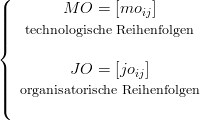
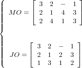
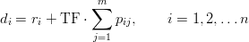

Zum Block-Matrizen Modell gehören einige Basisalgorithmen, die aufgrund der speziellen Struktur
des Plangraphen meist linearen Aufwand haben. Sie benutzen ausnahmslos die Matrizen des
Modells, die in eineindeutiger Weise die betrachteten graphentheoretischen Eigenschaften
beschreiben.
Algorithmus 1 bestimmt den Plan LR aus gegebenen Matrizen MO und JO, falls der Graph G(MO,JO) keine Zyklen enthält. Die Menge MQ enthält alle Operationen, die sowohl Quellen in G(MO) als auch in G(JO) sind.
| Input: n,m,SIJ, MO und JO über der Operationenmenge SIJ; |
| Output: LR über der Operationenmenge SIJ, wenn G(MO,JO) azyklisch ist; |
| BEGIN k := 0; |
| REPEAT |
| k := k + 1; Bestimme die Menge MQ = {(ij) ∈ SIJ∣moij = joij = 1}; |
| IF MQ = ∅ THEN (MO,JO) ist unzulässig und STOP; |
| FORALL(ij) ∈ MQ DO |
| BEGIN |
| lrij = k; Markiere in MO die Zeile i und in JO die Spalte j; |
| END; |
| SIJ := SIJ \ MQ; |
| FORALL (ij) ∈ SIJ in einer markierten Zeile in MO DO moij := moij − 1; |
| FORALL (ij) ∈ SIJ in einer markierten Spalte in JO DO joij := joij − 1; |
| UNTIL SIJ = ∅; |
| END. |
Algorithmus 2 berechnet MO und JO aus LR. Hier sind ai and bj die kleinsten natürlichen Zahlen, die für den Rang einer Operation (ij) verfügbar sind. Das maximale Element in LR wird mit r bezeichnet.
| Input: n,m,r,I,J,SIJ, LR über der Menge der Operationen SIJ; |
| Output: MO und JO über der Menge der Operationen SIJ; |
| BEGIN Setze ∀i ∈ I: ai = 1 und ∀j ∈ J: bj = 1; |
| FOR k := 1 TO r DO |
| FORALL (ij) ∈ SIJ mit lrij = k DO |
| BEGIN |
| Setze moij = ai und ai = ai + 1; |
| Setze joij = bi und bj = bj + 1; |
| END; |
| END. |
Algorithmus 3 erzeugt einen semiaktiven Schedule, d.h. die Matrix C = [cij] der Endbearbeitungszeitpunkte aller Operationen, aus der Matrix der Bearbeitungszeiten PT und einem Plan LR. Hier bezeichnen ri und rj jeweils den kleinsten möglichen Startzeitpunkt für Job Ai bzw. der Maschine Mj.
| Input: n,m,r,I,J,SIJ, PT und LR über der Operationenmenge SIJ; |
| Output: C über der Operationenmenge SIJ. |
| BEGIN |
| Setze ∀i ∈ I: ri = 0 und ∀j ∈ J: rj = 0; |
| FOR k := 1 TO r DO |
| FORAll (ij) ∈ SIJ mit lrij = k DO |
| BEGIN |
| cij := max{ri,rj} + pij; |
| ri := cij; rj := cij; |
| END; |
| END. |
Algorithmus 4 bestimmt die Matrizen H = [hij] und T = [tij]. hij ist der Head der Operation (ij), d.h. der kleinsten Zeit, die für die Bearbeitung aller Vorgängeroperationen von (ij) im Plangraphen G(MO,JO) nötig ist. tij bezeichnet den Tail der Operation (ij), d.h. der kleinsten Zeit, die für die Bearbeitung aller Nachfolgeoperationen von (ij) im Plangraphen G(MO,JO) nötig ist. Hier sind ri,rj wieder die frühesten Startzeitpunkte des Jobs Ai bzw. der Maschine Mj. si,sj bezeichnen die frühesten Startzeitpunkte des Jobs Ai bzw. der Maschine Mj bei der Rückwärtsrechnung.
| Input: n,m,r,I,J,SIJ, PT und LR über der Operationenmenge SIJ; |
| Output: H und T über der Operationenmenge SIJ. |
| BEGIN |
| Setze ∀i ∈ I: ri = 0 und ∀j ∈ J: rj = 0; |
| Setze ∀i ∈ I: si = 0 und ∀j ∈ J: sj = 0; |
| FOR k := 1 TO r DO |
| BEGIN |
| FORAll (ij) ∈ SIJ mit lrij = k DO |
| BEGIN |
| hij := max{ri,rj}; ri := hij + pij; rj := hij + pij; |
| END; |
| FORAll (ij) ∈ SIJ mit lrij = r − k + 1 DO |
| BEGIN |
| tij := max{si,sj}; si := tij + pij; sj := tij + pij; |
| END; |
| END; |
| END. |
Die Matrix W = H + PT + T enthält das Gewicht eines schwersten Weges wij von einer Quelle über die Operation (ij) zu einer Senke des Plangraphen G(MO,JO). Also liegen alle Operationen mit maximalem Gewicht wij auf mindestens einem kritischen Weg. Wegen der Eigenschaften eines lateinischen Rechtecks lassen sich alle Operationen in O(nm) nach nichtfallenden Rängen sortieren. Damit lassen sich die Heads und Tails sowie alle wij auch in linearer Zeit berechnen.
Das Kapitel schließt mit einem Beispiel zum Block-Matrizen Modell.
Beispiel 3 Betrachtet wird die Matrix PT der Bearbeitungszeiten aus Beispiel 1. Die Duedates der Aufträge seien gegeben durch d1 = 6,d2 = 12,d3 = 8. Die folgende Kombination aus technologischen und organisatorischen Reihenfolgen ist zulässig, weil der zugehörende Plangraph keine Zyklen enthält
A1 : | M4 → M2 → M1 |
A2 : | M2 → M1 → M4 → M3 |
A3 : | M3 → M1 → M4 → M2 |
M1 : | A3 → A2 → A1 |
M2 : | A2 → A1 → A3 |
M3 : | A3 → A2 |
M4 : | A1 → A3 → A2 |
Algorithmus 1 erstellt den Plan LR und Algorithmus 3 berechnet den Schedule C:
|  | ⇐⇒ |  |
| C =  | ||
Die Matrizen H und T werden mit Algorithmus 4 bestimmt, woraus sich die Matrix
W = H + PT + T ergibt:
Der Schedule C liefert Cmax = 12 und C1 = 7, C2 = 12, C3 = 9, womit ∑ Ci = 28, Lmax = 1, ∑ Ti = 2 und ∑ Ui = 1 folgt. Dieser Schedule ist optimal im open-shop Fall für die Zielfunktionen Cmax and Lmax, es gibt bessere Schedules für ∑ Ci, ∑ Ti und ∑ Ui.
In einem job-shop bzw. flow-shop Problem mit gegebener Matrix MO sind alle Pläne LR zulässig, die die gegebenen technologischen Reihenfolgen enthalten.